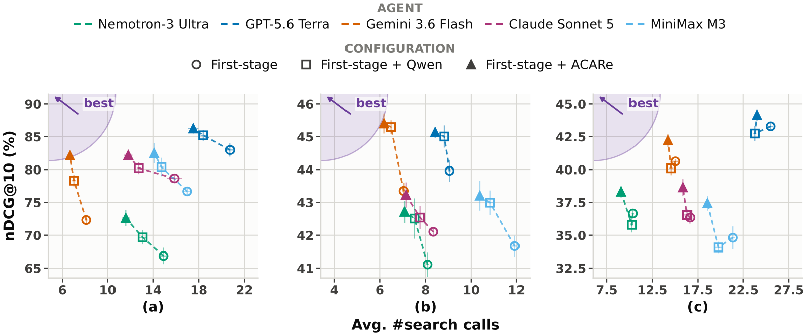
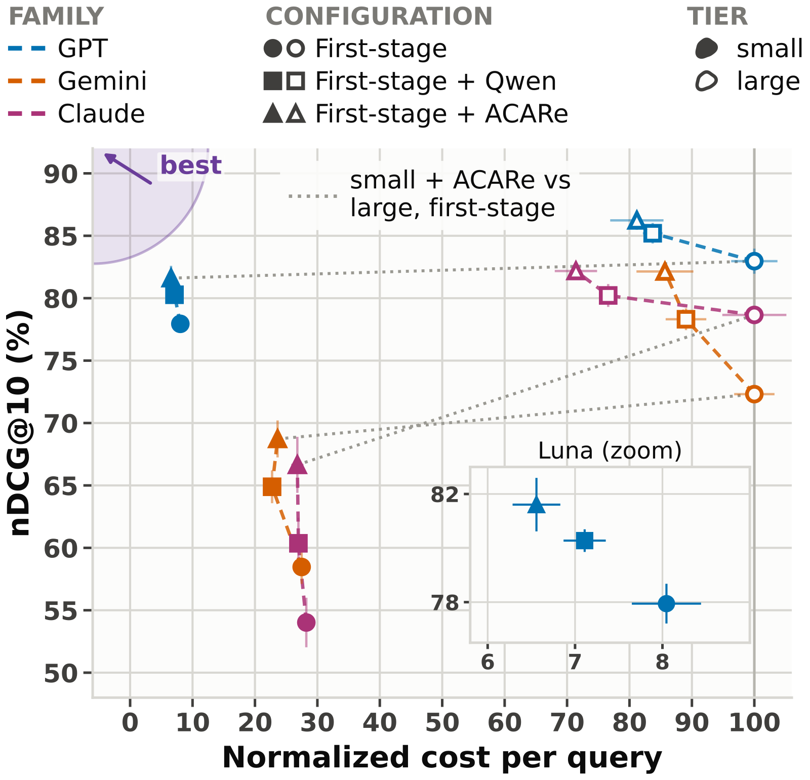

目录 · 8 节
1它到底在解决什么问题？2整体流程：同一个 reranker，四种输入3为什么要随机丢掉上下文字段来训练？4训练数据从哪来？5实验结果：排得更准，搜得更少6我认为它的局限7一个推荐/搜索团队可以怎么试8一句话结论搜索 agent 一步步查资料时，发出去的子查询往往只是几个关键词，原问题里的目标和约束都不在里面。传统 reranker 只拿子查询给文档打分，于是一篇和关键词很像、对原问题却毫无用处的文档会被排到前面。NVIDIA 和滑铁卢大学的 ACARe 把原问题和 agent 写下的推理过程一起交给 reranker，让它判断这篇文档对整个任务有没有用。最值得注意的是一个对照：不改 Qwen3-Reranker-4B 的任何参数，只在输入里加上原问题，一个小 agent 的答题准确率就从 48.2% 升到 54.8%；再用 agent 轨迹专门微调成 ACARe，到 57.6%。在五个 agent 上，ACARe 都比原版 reranker 排得更准、搜索次数更少。
做 agent 式检索或 deep research 的团队值得读这篇，理由很实际：它要改的只是 reranker 的输入，不用动召回、不用碰语料，用的是第三方搜索接口也能加。核心思想一句话：子查询负责说这一步要找什么，原问题和推理过程负责说为什么要找，reranker 同时看两者再判断相关性。我认为这篇最有用的结论恰恰来自上面那个对照，大部分收益来自把上下文喂给 reranker 这个做法本身，专门训练再多加的那 1.7 个点在校正后并不显著。
它到底在解决什么问题？
用一个例子说明（示意）。用户问：“哪位导演的处女作在 1998 年拿了柏林电影节的奖，后来又拍过一部太空题材的电影？”agent 想先找出 1998 年柏林获奖的处女作，于是发出子查询“1998 柏林 获奖 电影”。
| 候选文档（示意） | 只看子查询 | 同时看原问题和推理过程 |
|---|---|---|
| 1998 年柏林电影节获奖名单 | 很相关 | 相关，能从里面找处女作 |
| 一部 1998 年在柏林拿奖的纪录片的影评 | 很相关 | 不太相关，纪录片导演后来没拍过太空片 |
| 柏林 1998 年的城市旅游指南 | 有些相关 | 无关 |
| 某导演访谈，提到自己处女作在柏林获奖、新片讲太空站 | 一般，关键词只对上一部分 | 最相关，直接回答了原问题 |
只看子查询的 reranker 会把影评和旅游指南排得比访谈高，因为子查询里没有“处女作”“太空”这些约束。agent 读到无用文档，只能再换个关键词搜一次，搜索次数和接口费用都跟着涨。
AgentIR 这类方法把推理过程放进召回模型里，但召回模型要在本地给整个语料建索引。ACARe 放在第二阶段，只给返回的候选打分，所以 BM25、向量召回和只返回文档文本的搜索接口都能接。
整体流程：同一个 reranker，四种输入
ACARe 从 Qwen3-Reranker-4B 微调而来，仍然逐篇打分：把输入和一篇候选文档拼在一起，读出下一个 token 是 yes 和 no 的 logit 之差，作为相关性分数。区别在输入里放了什么：
| 模式 | 输入 | 什么时候用 |
|---|---|---|
| M0 | 只有子查询 | 和原版 Qwen3-Reranker 的输入完全一样 |
| M1 | 子查询 + 推理过程 | agent 公开推理，但拿不到原问题 |
| M2 | 子查询 + 原问题 | 商用模型不公开推理过程时 |
| M3 | 子查询 + 推理过程 + 原问题 | 开源 agent，两者都有 |
推理过程指 agent 在发出这次搜索之前已经写下的那段思考，只取当前这一轮，不拼接之前各轮。两个字段都是 agent 本来就会产出的，不需要额外调用模型，代价只是 reranker 的输入变长。子查询说明这一步找什么，原问题说明为什么找，下面拆开讲训练怎么让一个模型同时适配四种输入。
为什么要随机丢掉上下文字段来训练？
实际部署时，不同 agent 能给的上下文不一样。开源模型会公开推理过程，GPT、Gemini、Claude 这类商用接口通常不公开。如果为每种情况各训一个模型，维护成本太高。作者的办法是训练时把推理过程和原问题各自以 0.5 的概率随机丢掉，两个字段都在时，四种模式各占四分之一。丢掉的字段不出现在输入里，提示词也换成剩下字段对应的版本。这样一个模型就能在任何一种输入下工作。
训练目标用的是 LCE（localized contrastive estimation）：一组里有一个正例和若干召回来的负例，对这一组的分数做 softmax 交叉熵，温度 0.5。
其中 是正例的分数， 是第 个负例的分数，。直觉是让模型学会在一组难负例里把正例挑出来，而不是孤立地判断每篇文档相关与否。手算一下（示意）：一组 8 篇，正例分数 2，七个负例都是 0， 时正例的概率是 ；如果负例里有一篇也得 2 分，正例概率就掉到 ，损失会推着模型把这两篇拉开。
训练数据从哪来？
难点在于标签要按子查询来标，而不是只按原问题。作者在 DR-Synth（AgentIR 发布的合成数据）的做法上扩展：从带标准答案和支撑文档的问题出发，让 agent 跑出搜索轨迹；对每个子查询，把它召回到的候选交给一个更强的标注模型排序，标注模型同时看得到原问题、标准答案和支撑文档，所以能判断哪篇候选真正推进了这一步。排第一的当正例，排在最后的七篇当负例，和这个子查询、它的推理过程、原问题组成一条训练样本；再用一个评审模型对比 agent 的最终答案和标准答案，过滤掉失败的轨迹。
在此基础上，作者用 Nemotron-3-Embed-8B 对原有子查询重新召回一批候选并重新标注，又让 agent 改用这个召回模型搜索，跑出一批新的轨迹，搜索时返回给 agent 的是标注模型排在最前的文档。最后训练样本从 DR-Synth 的 5,238 条扩到 16,601 条，每条是一个子查询加上下文和 8 篇文档。重新召回的好处是同一个子查询能见到不同召回模型给出的负例，减少对某一种召回模型的依赖。
实验结果：排得更准，搜得更少
第一个问题是不加上下文时，微调本身有没有用。一次性检索里每个原问题只搜一次，ACARe 用 M0 模式，和原版输入完全一样。在 BrowseComp-Plus（BCP，多跳网页问答）、BRIGHT（需要推理的专业检索）和 TRQA（多步推理问答）三个数据集、四个召回模型上，它的 nDCG@10 都是最高，比原版 Qwen3-Reranker-4B 高 1.7 到 4.5 个点。这说明用 agent 子查询训练，本身就让 reranker 更适应关键词式的查询。
第二个问题是在 agent 真正多步搜索时效果如何。作者在 NVIDIA 的 Retrieval Bench 框架里接了五个 agent，开源模型用 M3，商用模型用 M2。每次搜索召回 100 篇、精排后返回 10 篇 agent 没看过的文档；搜完后 agent 提交一份 10 篇的最终排序，nDCG@10 按这份最终排序算。下表是三个数据集的平均值。
| Agent | 不精排 nDCG@10 | Qwen3-Reranker-4B | ACARe-4B | 每题搜索次数（不精排 → ACARe） |
|---|---|---|---|---|
| Nemotron-3 Ultra | 48.2 | 49.3 | 51.2 | 11.1 → 9.2 |
| MiniMax M3 | 51.1 | 52.5 | 54.4 | 16.8 → 14.3 |
| Gemini 3.6 Flash | 52.1 | 54.6 | 56.6 | 10.1 → 9.0 |
| GPT-5.6 Terra | 56.7 | 57.6 | 58.5 | 18.4 → 16.6 |
| Claude Sonnet 5 | 52.4 | 53.1 | 54.7 | 13.6 → 11.6 |
五个 agent 上 ACARe 都比原版 reranker 高 0.9 到 2.0 个点，搜索次数也都更少。搜索少是因为每次返回的前十篇更有用，agent 不必反复换关键词。接口费用上，两个 reranker 都比不精排省钱，但 ACARe 只在 Nemotron-3 Ultra 上比原版显著多省了 12%，其余四个 agent 差别不显著。

TRQA 上有个值得留意的现象。这里的召回模型是 AgentIR-4B，它本身已经把推理过程用进了召回。在它后面接只看子查询的原版 reranker，五个 agent 里有四个的 nDCG@10 反而下降；换成 ACARe，五个都提升。这说明不看上下文的 reranker 会把上下文感知召回排好的顺序打乱。
第三个问题是收益来自上下文还是来自训练。作者在 Piika 答题框架里固定用 Nemotron-3.5 Lightning 这个小 agent，在 200 道 BCP 题上比较：
| reranker | 输入 | 答题准确率 | 每题搜索次数 |
|---|---|---|---|
| 不精排 | 无 | 42.2 | 10.8 |
| Qwen3-Reranker-4B | 只有子查询 | 48.2 | 10.1 |
| Qwen3-Reranker-4B | 子查询 + 原问题 | 54.8 | 9.3 |
| Qwen3-Reranker-4B | 子查询 + 推理过程 + 原问题 | 55.9 | 8.7 |
| ACARe-4B | 子查询 + 推理过程 + 原问题 | 57.6 | 8.4 |
原版模型只加上原问题，准确率就从 48.2% 到了 54.8%，再加推理过程到 55.9%；ACARe 在同样输入下又多 1.7 个点，但这最后一步在多重比较校正后不显著。大部分收益来自把原问题放进 reranker 的输入，训练是锦上添花。
最后，小 agent 受益更多。在 BCP 上，GPT-5.6 Luna、Gemini 3.5 Flash-Lite、Claude Haiku 4.5 这三个小模型配上 ACARe，和对应大模型不精排时的 nDCG@10 差距分别缩小了 73%、74% 和 51%，用原版 reranker 只缩小 46%、46% 和 26%。这意味着给小 agent 配一个好的检索工具，是一种比换大模型便宜得多的提升办法。两边都用 ACARe 时，三个小模型的接口费只有对应大模型的 8%、28% 和 38%，代价是 nDCG@10 低 4.6、13.4 和 15.5 个点。

我认为它的局限
第一，费用分析只算了 agent 的接口费，没算 reranker 本身。作者假设本地部署的 4B reranker 成本可以忽略，但 ACARe 的输入里多了原问题和推理过程，每篇候选都要多读这一段，每次搜索默认精排 100 篇。在端到端延迟上，两个 reranker 都比不精排慢，ACARe 只比原版快 7% 到 8%。
第二，训练带来的增量证据偏弱。上面那个对照只在一个小 agent、一个数据集上做过，ACARe 相对加了上下文的原版只多 1.7 个点且不显著；在 BRIGHT 上，召回模型 Nemotron-3-Embed-8B 训练时用过这个语料的合成数据，ACARe 对原版的增益只有 0.2 个点。
第三，答题实验规模小。ClimbMix 上的端到端答题只有 57 道题，标准差在 2 到 5 个点之间，Lightning 不精排时准确率只有 10.2%，结论主要看方向，不宜细比数字。
一个推荐/搜索团队可以怎么试
- 先做零训练版本：在现有 reranker 的输入里拼上用户的原问题，再试拼上 agent 当前这一轮的推理过程。论文里这一步就拿到了大部分收益，成本只是输入变长。
- 判断成败看三个数：前十篇的 nDCG 或人工相关率、每题搜索次数、端到端答题准确率。搜索次数下降是最直接的信号，说明 agent 拿到的文档更有用。
- 有效再考虑微调。可以用自己 agent 的历史轨迹，按子查询构造正负例，训练时随机丢掉上下文字段，让一个模型适配公开推理和不公开推理的两类 agent。
- 留意 reranker 的输入长度和延迟。推理过程可能很长，要设上限，并比较精排 50 篇和 100 篇的取舍。
一句话结论
agent 的子查询脱离了原问题就说不清要找什么，把原问题和推理过程交给 reranker 是一个成本很低、收益明确的改动；专门训练的 ACARe 在此基础上还能再好一点。
| 维度 | 评价 |
|---|---|
| 问题重要性 | 高。agent 式检索越来越多，子查询丢失任务约束是普遍问题 |
| 方法创新性 | 中。思路直接，新意在于一个模型适配四种上下文输入，以及按子查询扩展训练数据 |
| 实验证据 | 中高。五个 agent、三个数据集、多次重复和显著性检验都有；训练增量的对照只做了一组 |
| 工程成本 | 低。只改 reranker 输入，零训练版本当天就能试；微调版本需要 agent 轨迹数据 |
| 是否值得尝试 | 值得，先试零训练的加上下文版本 |
| 适用场景 | deep research、多步问答、接第三方搜索接口的 agent 检索 |
读完这篇，你觉得
夜读鸮记下了，谢谢你的反馈。
点一下即可，无需登录；再点一次撤回。只统计匿名次数，不记录你是谁。
讨论
欢迎补充实验细节、复现经验或不同看法。需 GitHub 登录。
正在加载讨论…